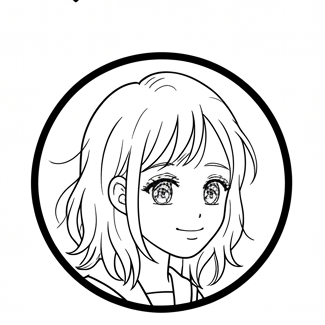

방어선은
나에게서 시작된다
학교에서 하루를 보내며 감염병 예방 수칙을 선택해보세요.
학습 목표 학교생활 속 시나리오를 통해 인플루엔자 예방 지식을 실천적 의사결정 능력으로 전환하고, 개인의 선택이 공동체 건강에 미치는 영향을 성찰한다.
1 / 9
올바른 손씻기, 정확히 알고 있나요?
1. 몇 초 이상 씻어야 할까요?
2. 어떤 물로 씻어야 할까요?
3. 무엇으로 씻어야 할까요?
4. 꼼꼼히 씻어야 할 부위를 모두 고르세요
다음날
알고보니 독감을 확진 받은 짝꿍
감기 vs 독감, 뭐가 다를까?
| 구분 | 감기 | 독감(인플루엔자) |
|---|---|---|
| 원인 바이러스 | 리노바이러스 등 200여 종의 다양한 바이러스 | 인플루엔자 바이러스(A·B형이 주로 유행, 매년 항원이 변이함) |
| 잠복기 | 1~3일 | 1~4일(평균 2일) |
| 발병 양상 | 서서히 시작 | 갑작스럽게 시작 |
| 발열 | 미열이거나 없음 | 38도 이상 고열이 24~48시간 내 최고조 |
| 전신 증상 | 가벼운 피로감 위주 | 두통·근육통·전신 쇠약감이 뚜렷함 |
| 주요 합병증 | 드물게 중이염·부비동염 | 세균성 폐렴, 중이염, 심근염, 뇌염·뇌증 등 |
| 전염 가능 기간 | 대체로 3~7일 내 자연 호전 | 발병 하루 전부터 발병 후 5~7일까지(소아·청소년은 더 길 수 있음) |

짝꿍
오늘 하루, 나는 어떤 하루를 보냈을까?
내 방어 게이지 — 1부(등교~하교)에서 내가 실천한 예방 행동을 종합한 지표예요. 손씻기, 마스크, 환기, 소독처럼 나 자신을 감염으로부터 지킨 정도를 보여줘요.
학급 감염병 전파율 — 내 선택이 우리 반 전체의 확산 위험에 미친 영향을 보여주는 지표예요. 학급 인원을 30명으로 가정했을 때 몇 명에게 감염이 전파됐을지 추정한 수치도 함께 보여줘요. 나를 지키는 것뿐 아니라, 환기·소독처럼 주변으로 옮기지 않도록 한 행동과, 아픈 친구가 빨리 보건실이나 병원의 도움을 받도록 안내한 행동까지 함께 반영돼요.
짝꿍 도움 배지 — 2부에서 독감에 걸린 짝꿍에게 얼마나 정확하고 도움이 되는 조언을 해줬는지 보여주는 지표예요.
내 선택 되짚어보기
나만의 감염병 예방 수칙 정리
오늘 배운 내용을 개조식(글머리 기호)으로 자유롭게 정리해보세요.
오늘의 소감 & 앞으로의 다짐
제출한 내용 조회하기
다른 친구들의 예방 수칙 둘러보기
누가 작성했는지는 표시되지 않아요.